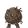

人物角色
取得防災背心後 Gene 會變大；再取得安全帽後可以丟出紙本公文，遠端協助通報與疏散。
土石流紅色警戒大作戰
颱風豪雨正在累積雨量。操作 Gene 穿越潛勢溪流場域，蒐集監測資料、疏散民眾，並在紅色警戒前抵達防災應變中心啟動警報。
取得防災背心後 Gene 會變大；再取得安全帽後可以丟出紙本公文，遠端協助通報與疏散。
在累積雨量達到 300 mm 前抵達終點，啟動警報發布器，完成防災通報。

泥甲巨石怪被踩踏或公文命中時會顯示「工程整治」；民眾第一次踩踏會顯示「勸導」，再次接觸或被公文命中則顯示「成功撤離」。
A / ← 後退 D / → 前進 SPACE 跳躍
S 蹲下 Q 丟公文